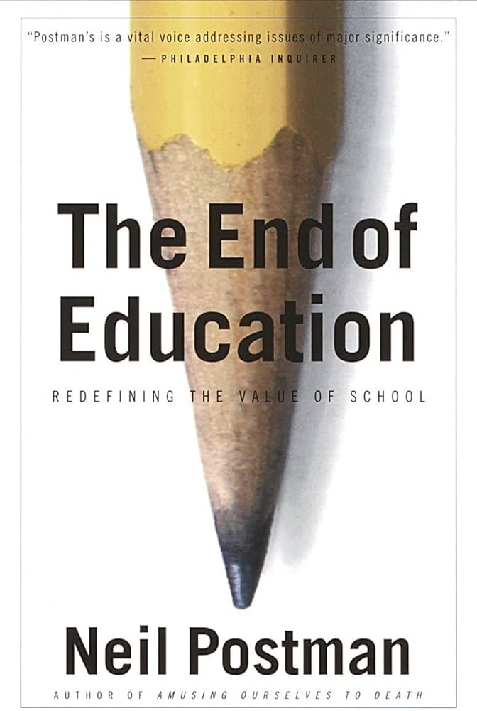

Review of "The End of the Education". 4.5/5 stars.

My Review
After reading “Amusing Ourselves to Death”, I decided to delve into more Neil Postman books and picked up “The End of Education.” I enjoyed the book very much but I did find it a bit worse than “Amusing Ourselves to Death.” “The End of Education” is a lot less focused and I found it harder to follow Postman’s argument. Throughout the course of the book, Postman identifies different problems in American society and describes how a change in education can alleviate them. Many of his proposed solutions I did not agree with and seemed to be rather utopian to me. Perhaps I am unable to imagine a schooling different from what I experienced growing up. Postman himself makes the claim that his ideas are not radical in the slightest and that great changes in our education system have been made in the past and can continue to be made. Postman also identifies that, in the real world, change is difficult and he only aimed to start a discussion with this book. I intend to discuss Postman’s takes in this little essay and compare them with my own educational experiences and give my own thoughts on his ideas.
Postman starts out by describing his general education philosophy: the need for “narratives” (which he likens to Gods) to follow in schooling. Essentially, people need to understand why they are learning for them to enjoy learning and continue learning outside of regular schooling. In the past, the narrative being followed was a religious one where students learned to read and write in order to become better followers of their God. In American history, the first narrative that many students were taught was the narrative of American democracy where students learned about their government and the Constitution in order to become better citizens and take part in the political process. Each of these narratives, for better or for worse, created passionate adults who were willing to continue to learn in the name of their narrative.
Today, Postman argues, we have no good narrative to follow. Instead, the narratives are shallow and don’t teach our youth how to properly live their life. Americans nowadays see learning as a process confined to schools and not something that should be continued in their adult life. Frankly, it’s hard for me to want to continue learning now that I am almost done with formal schooling. High school and college was such a slog for me and I never understood how people could choose a career where they continuously have to learn, like academia or research. Not only do those roles not pay the best, but you have to enjoy learning to be successful in them. For me, I knew school was important and that my future would be dim if I did not learn and take school seriously (something my parents instilled in me from a very young age). However, fear for the future does not really work as a motivator when you finally reach the future you were looking towards. Now that my learning has resulted in me attaining a high paying job, I’m not exactly sure what I am supposed to be learning for, which is kind of a problem since I have a few more classes left this semester that I need to pass. I suppose the logical answer would be to learn for the promotion, but it’s not really the life or poverty scenario I imagined in my head as a younger student. Little did I know it, but I perfectly encapsulated Postman’s arguments against the current educational narratives which he narrowed down to consumerism, economical utility, and technology.
Consumerism as an educational narrative is a relatively recent one. Instead of students learning to become better American citizens, students began learning in order to take part in the economy and live more comfortably. This is partly related to “Amusing Ourselves to Death” as Postman goes into depth in that book how America became more consumeristic over time as the dominant media in the country changed. With television, advertisements became far more widespread and psychologically pleasing which made consuming products even easier. The economical utility narrative goes hand in hand with consumerism since you need a job to earn money and become a good consumer. Thus, our schools became factories to produce Americans who are ready to enter the workforce (not necessarily good citizens or even good humans). Most recently, technology has become a new narrative where we Americans have correctly identified technology as the new age we will be living in and thus technology should be a focal point of our schools and children should be taught how to use technology.
I think it is obvious the way that I described the current narratives that none of them are particularly inspiring, especially to a child. Economic utility as a narrative especially gets under my nerves and it’s something that I always identified as a problem. I often have thoughts along the lines of “Why am I doing all of this studying and not enjoying myself just to work at a job for the rest of my life?” Luckily, I had parents with high expectations of me to force me to continue studying anyways, but it is easy to imagine other students who simply don’t take school seriously because the narrative does not give them a sufficient purpose. Getting a job is not something fulfilling to humans, so framing education around that purpose is not fulfilling either. Postman also makes the point that our previous education narratives perfectly trained generations of Americans that were both good citizens and good workers, so focusing our education on creating good workers is just unnecessary. I think this quote from Postman summarizes the argument poignantly: “Any education that is mainly about economic utility is far too limited to be useful, and, in any case, so diminishes the world that it mocks one’s humanity.”
Postman’s writings have also helped me look at technology in a more critical light, something I started doing after reading “Amusing Ourselves to Death.” The focus on technology in schools seemed obvious to me as knowledge of technology is essentially required to live today. However, similarly to creating good workers, past schooling already completed this task by creating intelligent adults. Intelligent adults don’t need to be taught how to use technology, they simply learn it as they grow up normally. New technology has always been invented and widely adopted without that technology becoming a part of regular classroom teaching. Unfortunately, America today is unimaginative when it comes to education and thus we simply throw technology to our young children and hope it sticks (which it definitely will since they are impressionable kids). We don’t question how technology affects us and the students, we just tell them it's the future and they must now do everything online. With artificial intelligence, this narrative is getting even stronger. Ohio State University recently made the news for requiring “AI Fluency” as a part of their undergraduate curriculum. At an institute of higher education, you might expect this objective to be well thought out with students discussing how AI will change the world and human behavior for the better and for worse, but instead it boils down to figuring out how to use AI effectively in a very economical manner. Other colleges and school systems have adopted a similar approach and I myself have had to suffer through AI assistants and grading tools in my college experience. I can’t say AI has made me a better student, but it has definitely made me more efficient with the downside that I simply don’t learn as well. Offloading my thinking to an LLM is not an effective way to train your brain. I worry for young students growing up with AI as the norm where they will be expected to use AI before they even learn how to think logically for themselves. I expect our collective critical thinking skills to fall in the future. Frankly, if it were up to me, I’d restrict all technology from schools until high school. Schools worked perfectly fine before the digital age and we have lost more in our education than we have gained with technology. I imagine our schools would become far more social and our students much better thinkers and readers with this change, and they would still eventually gain exposure to technology when they are able to control themselves (hopefully).
Of course, the book would be very depressing if Postman simply summarized the problems with our current educational system. He also gives many suggestions for how to improve it by refocusing the narrative on better ideals. I will briefly summarize them now and give my own thoughts on each.
The first narrative Postman identifies is a continuation of the previously mentioned American democracy narrative where students were taught with the end goal of creating good Americans ready to partake in the republic. Postman iterates upon this idea with a more open ended narrative that he describes as the “American Experiment.” The American Experiment, in his eyes, is the story of the USA as a whole. From its conception, the USA has always been groundbreaking in terms of governance, human rights, and diversity. Postman highlights how unique America was in that regard and how America has inspired many around the world to advocate for their own rights. In schools, Postman argues that these rights and fundamental truths about America should be the focal point. Students should be taught about the Constitution and the various debates throughout America and how it has shaped the country into what it is today. Doing so will give students perspective and an idea on where America is heading and how they can be a part of the story. This is possibly my favorite narrative that Postman identifies in the book. The American Experiment is very similar to other patriotic/nationalistic narratives taught in schools currently and so it would be very easy to make the change to a more realistic, less dogmatic view of American history. The founding fathers always saw the USA as a work in progress and always expected the Constitution and society to change over time. Continuing that view instead of an unconditional love for America would resonate well with young people, especially since young people have many gripes with their country and society. Teaching them ways the country has changed over time (the experiments that have been attempted) will provide them ideas on how to improve America and become good citizens. I myself was lucky enough to have a US history teacher that taught in the name of this narrative. At the start of the class, he read us the Declaration of Independence and told us that he still chokes up reading the preamble. I had the displeasure of going to high school at one of America’s most humiliating times, but his teaching helped me realize that America is ever changing and our fundamental truths outlined in our founding documents provide us freedom to make these changes. Unfortunately, there are other problems with that ideology that are clear when you actually pay attention to politics, but it’s a nice idea to hammer into students. Much better than having kids who can’t imagine the world getting better or believing they have no voice in the matter.
The next narrative Postman delves into is diversity and how it can inspire students to look outward towards the world as inspiration. I was rather puzzled by Postman’s inclusion of this narrative as it seems as though this narrative has already failed in schools with how divisive the topic has become politically and socially. No one can seem to define the correct level of diversity to be taught to students, which histories to teach, which perspectives to follow and so on. However, Postman makes a stark difference between current diversity teaching and the teaching he is proposing. Today’s diversity emphasizes each person’s ethnicity as something to study and be proud of. However, this is entirely antithetical to a school’s purpose of unifying the country and preparing students for the upcoming world. With an education focused on one’s own ethnicity or one certain perspective of history, the students become disunited and disillusioned with the idea of a cohesive society. Postman instead describes diversity as a source of inspiration to humankind as a way to share our common experiences with each other. Through the analogy of entropy, the universe’s natural tendency towards homogeny, Postman argues that diversity prevents such a thing from occurring and provides fresh experiences and ideas to be created. Essentially, without diversity, the world would become rather boring. By teaching students about the world through different languages, religions, customs, and art, students can identify how alike the human experience is and how many different ways this experience is expressed and inspire them to find their own ways of expression. One of Postman’s ideas that sounded ridiculous to me initially but that I’ve come around on is the idea of museums being part of a school’s curriculum. Postman describes each museum as the answer to the question: “What does it mean to be a human being?” Through every museum in the world, each culture, people, ideology, etc. gives their own answer to the question through art, architecture, pictures, etc. I understand what he means by this and have enjoyed my fair share of museums, but it seems more like an interesting idea than a viable subject in school. Overall, I love this idea of diversity that Postman describes. Whenever I get bored with my current interests, I find it best to take a step back and try and diversify my inputs. I try reading a different author, listening to a new genre, watching a new director, eating new food, or anything like that. Focusing on this aspect of the human experience in schools is a great way to keep wide eyes from closing as well as for students to understand the differences between people around the world in a non derogatory manner. In this manner, the tricky subject of diversity can be successfully taught in schools.
I find that the previous diversity narrative ties nicely with another narrative in the book: the narrative of what Postman calls “Spaceship Earth.” I am not sure if this narrative required such a grand title considering it boils down to teaching students to become active members of their communities and be conscious of the environment as a whole. Many of the same ideas of unity from the diversity narrative carries over. Postman makes the case that volunteering should be a part of the curriculum for the double benefit of helping the community and forging students into well functioning citizens. Initially, I thought this to be a redundant addition. So many of my peers accumulated hundreds of hours of volunteering work in high school (especially impressive considering we were under lockdown for a good portion). I myself bravely shelved books at my local library. However, I suppose our intentions were not in the best place considering most of us were just padding our college resumes. All that work just to end up at Georgia Tech probably did not give us the motivation to continue with our good samaritan-like ways. By including it in school as a part of the curriculum, perhaps my peers and I would have found the simple joy in helping our community without the stress of college breathing down our necks. Of course, there are many schools in the United States with much less focus on going to college, so a class focused on community volunteering would be far more effective there. However, I really doubt a class will convince students to continue to be active members of their communities beyond the class. If anything, there is a chance for public service to be resented if students are treated as unpaid labor instead of respected as the next generation. Perhaps something on a smaller scale would work best to instill a sense of public duty, like a community project that students work on together. The “Spaceship Earth” narrative also includes teaching students about the history of the Earth and the people that inhabit it. Postman proposes three new common subjects for schools to effectively do so: archaeology to teach about the history of the Earth, anthropology to teach about the differences between the people on the Earth, and astronomy to teach what lies beyond the Earth for us all. Archaeology and anthropology I find to be very worthwhile subjects that students should be introduced to, but honestly I don’t see how astronomy can be sustained as a subject. I think current schools and society as a whole does enough to make us yearn for the stars and beyond. Overall, “Spaceship Earth” is a very worthwhile narrative that follows the unifying principle that Postman believes schools should strive for. For me, the only problem with this narrative is that I just can’t see such an ideal view of the world take hold. In the 2020s, nationalism is continuing to rise and I can’t imagine most people are willing to care about humans around the globe the same amount as the people they are familiar with. Postman wrote this book in the 1990s right after the USSR collapsed. The world in that time was seemingly unified with the USA leading the way towards an increasingly globalized economy. For better or for worse, nationalism has taken hold across the world and it seems as though we are going in the opposite direction away from a “Spaceship Earth." Then again, maybe I am getting the cause and effect wrong. Perhaps we need this narrative implemented first before we begin the shift towards “Spaceship Earth” instead of waiting for everyone to already be willing to give it another chance.
The last two narratives that Postman describes are far more abstract than the prior narratives. In fact, I am not even sure if I quite understand their meaning/importance in education. The prior three narratives were all rather realistic ideologies and they have even been implemented in some schools across America. They simply advance upon previous narratives used in schools. These next narratives definitely contain some of Postman’s most wild ideas and I had an interesting time pondering and trying to understand them. I severely doubt if any of them can actually be used in schools but only by asking these questions and starting these conversations can good ideas can be formed and the realm of education can advance.
The “Fallen Angel” narrative is what Postman calls his penultimate narrative. The Fallen Angel is a metaphor for humanity falling from God’s graces and left with all our uncertainty and questions on Earth. Throughout human history, Postman emphasizes that so much suffering and pain have been caused by people so entrenched in their beliefs they are unwilling to accept opposing viewpoints. This all stems from our deep, human fear of the unknown that we are surrounded by growing up. When we finally obtain a philosophy that provides answers to our questions, it’s hard to accept that the answers may be incorrect and that the philosophy should change. An inelastic mind is an awful poison that is very difficult to prevent especially in our tribalized, online world today. When you hold a belief too close to your own self, any criticism upon that belief is interpreted as a criticism of your own self. Postman identifies this problem and states that education can be reformed to prepare students’ minds to be more amenable to changes in belief.
Postman makes three specific suggestions on how to implement such a narrative in our classrooms. The first being that textbooks should be banned within the classroom and not used in instruction. The second being that teachers should be forced to switch subjects over time. Finally, the last suggestion is for teachers to intentionally include mistakes in their lectures for students to catch. While I am sympathetic to the narrative as a whole, each of these suggestions make me roll my eyes with how idealistic they are. The idea behind these suggestions is that they will help teachers become more agile in their teaching and students more attentive to ask questions and be more experimental. Postman particularly rallies against textbooks saying that they “are enemies of education, instruments for promoting dogmatism and trivial learning” which seems a bit harsh to me. I always considered text books a valuable tool that allows anyone to learn any subject in a standardized way, no matter the quality of the school or teacher they have. Of course, therein lies the difference between my idea of education and Postman’s idea of education. Postman believes education as a way to mature into adults and live a fulfilling life while I still view education as a way to just learn a subject probably because that was the level of education I was subject to. As for his second suggestion, the idea is that, if teachers teach the same subject repeatedly, they may forget the experience of being a student themselves and forget how to effectively teach or not stay up to date with the latest techniques of teaching. By forcing teachers to switch subjects, they will be forced to become students again and learn the new content. By learning the new content, the teachers should be able to identify the best way for them to learn this new subject and thus apply that method when teaching. They can even attempt to teach in ways that would have been best when they were learning the subject. These first two suggestions would solve the problem of pigeonholing in teaching where past developments are given a large focus and students are not taught to expand their horizons of thinking to future developments. The third suggestion is just funny to me. Yeah, sure, it would keep students from memorizing the teachers words exactly and force them to actually think about what the teacher is saying, but at the cost of students trusting their teacher at all. This would be especially catastrophic for the, bless their souls, stupid students who can’t perform such analysis.
While I certainly lended the most criticisms to this narrative, I still feel very sympathetic to its ideals and want to see more of its influence in modern schooling. Our current stress based schooling where students are taught to fear making mistakes does no good and encourages cramming and memorization. Schools should be the best place for children to make mistakes and learn from them, one of the best methods of learning. One more suggestion in this section that Postman makes that I find far more pragmatic is to teach every subject in a chronological manner where the order of developments in each subject will display how our understanding of said subject was, is, and will be error-prone. Even when reaching the modern interpretations of each subject, students will be left with the expectation that the current interpretation will also change, or, better yet, they will be the ones to change that interpretation.
I remember this helping my chemistry when we were taught the structure of atoms. Beginning with the most simple interpretations, we learnt how the model changed successively as new findings changed the prevailing theory. Even today, we are still uncertain on the specifics of atomic structure and I still find the topic, especially on a quantum level, very interesting. I don’t think I’ll be the one to come up with the next model, but I surely won’t be surprised when a new finding comes along and changes my beliefs from what I was taught in school.
The last narrative that Postman makes is also the one I have the least to say about since I just don’t feel very strongly about it. I just don’t really understand it still but I will do my best to explain it here. Postman calls it “The World Weavers/The World Makers” and it stems from his background in epistemology. Epistemology is the study of knowledge, specifically how knowledge is created and shared, a subject that is rarely covered in any schools before university. This is a rather big shame due to how even a surface level knowledge of epistemology could greatly enhance a student's ability to learn and communicate as a whole, which is exactly what Postman discusses in this last narrative. He advocates for the teaching of epistemology in each subject such that students will understand how knowledge is conveyed in each subject and thus learn that subject better. Postman states that each subject has its own structure and knowledge is fit to that structure which changes how that subject should be taught and advanced upon. It’s very hard for me to identify these structures now after learning them in such an epistemologically agnostic way for my entire life, but I think I can somewhat understand what Postman is getting at. I think of chemistry (or any other lab science) vs mathematics as an example of subjects that differ greatly in terms of their epistemology. In chemistry, new knowledge is gained via experimentation and often from brute force lab trials where new discoveries are often found in lucky breaks, such as how many artificial sweeteners were discovered. In many of these experiments, the scientists are not completely sure why the results are the way they are, but the results speak for themselves. In other words, in chemistry, the explanation of why something happens are not required to prove a cause and effect relation, instead rigorous experimental replications is enough for this new knowledge to be accepted. From there, scientists around the world can come up with their own hypotheses and collaborate on finding the specific one(s) that explain the phenomenon. In contrast, in mathematics, the details of a proof are the only way for a mathematical idea to be accepted. You can’t simply observe or guess the answers to mathematical problems. You must have a proof based on past knowledge that is infallible to any line of scrutiny. While you can certainly experiment by attempting to solve questions in numerous ways, you can’t expect to identify or solve a separate problem while working on another problem very much unlike how research is conducted in lab sciences. Of course, this entire section was written by a stupid computer science student so I might be talking complete nonsense on the nature of knowledge in lab sciences and mathematics, but I believe my analysis makes sense as an example of how knowledge differs between subjects.
Beyond learning subjects, Postman promotes epistemology teaching as a way for students to make better sense of the world. By understanding what knowledge is trying to be conveyed by a speaker and understanding how to best convey your own thoughts, the world becomes far more legible. An example Postman uses in the book is the difference between “does” and “is” in the example of someone “does” something smart vs someone “is” smart. While both convey similar messages of someone having relation to smartness, the specific relation is very different. If you say someone “is” smart, then that implies a hierarchy of smartness among all people where that person is higher on the totem pole. Whereas, if someone “does” something smart, then that simply implies approval of a specific action that other people can replicate to also “do” something smart. While this example seems like a stretch, it’s easy to see how this difference in thinking has shaped the world around us. The prevailing language today is that each person “is” smart/not smart and thus gifted programs and ranking of test scores is the best way to determine which kids have that gift of smartness. If instead smartness was spoken about as less innate and instead determined by actions, then perhaps these programs would no longer exist. Postman continues by discussing how each piece of media has its own epistemological theories and should be studied, but I’ve already discussed that in my “Amusing Ourselves to Death” review and won’t repeat it here.
With that final narrative, Postman ends the book on a somber note by discussing his fears for the future of education. He ponders whether such a book is necessary with the far more pertinent issues facing America today. The book appears rather out of touch when you consider the problems children face outside of school that a curriculum change could never fix, such as youth violence, drugs, and depression. Postman has also written about this decline of childhood (which I hopefully get around to reading eventually) and thus he is not ignorant to such problems. He admits that his book does not have all of the answers to protect and nurture our youth, but he wants to help in any way that he can to make our future any less dreary. In Postman’s own final words: “My faith is that school will endure since no one has invented a better way to introduce the young to the world of learning; that the public school will endure since no one has invented a better way to create a public; and that childhood will survive because without it we must lose our sense of what it means to be an adult.”
The review is over at this point, I just wanted to have a little addendum here mentioning you should read this book. I worry that I spent too long summarizing Postman’s points vs actually reviewing them in this review. You should not come out of this review believing that you understand all of Postman’s thoughts on education. Not even I understand all of his ideas. This is my first attempt at creating a long form review or paper of any kind for my own pleasure and I think I will look back on it poorly especially if I continue writing and get better at it. Let me know what you guys think, if any of you even got this far.